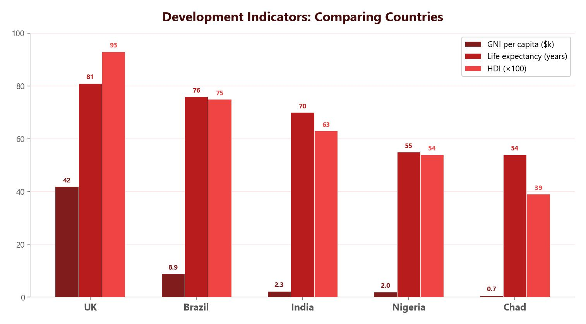

The Development Gap
The development gap refers to the widening difference in levels of development between the world’s richest and poorest countries. Some nations have grown wealthy while others remain trapped in poverty. This gap is caused by a combination of physical, economic and historical factors, and it has serious consequences for the people who live in less developed countries.
Physical Causes of Uneven Development
A country’s physical geography can make development much harder. The main physical causes include:
- Landlocked countries — countries like Nepal that have no coastline find it very difficult to trade because they have no access to ports. This limits their ability to export goods and reduces the income they can earn.
- Tropical diseases — malaria is found in tropical regions of South America, Central and Southern Africa, and South-East Asia. People in these areas often cannot afford preventative measures or treatment. The disease makes people too ill to work or attend school, which limits their ability to earn money and develop.
- Climate and poor soil — arid areas like the Sahara and Sahel have very little rainfall, meaning the soil lacks nutrients and cannot support good crop growth. Farmers cannot grow enough food to feed themselves, let alone produce a surplus to sell.
- Natural hazards — earthquakes and tropical storms cause devastating damage. In places like Haiti, storms destroy buildings and infrastructure, which is extremely expensive to rebuild. People lose their homes and jobs, pushing them further into poverty.
Physical factors often create a vicious cycle. A country hit by natural hazards has to spend money on rebuilding rather than developing. Poor climate reduces food production, leading to malnutrition and lower productivity. Being landlocked cuts off trade routes, reducing income.

Economic Causes of Uneven Development
Trade and Tariffs
Trade plays a major role in development. Tariffs are taxes added to the price of goods when they cross borders. HICs often form trading blocs (like the EU) that allow tariff-free trade between members. LICs are rarely part of these blocs. This means LICs pay full tariffs when buying manufactured goods like hospital equipment, and HICs can drive down the price of raw materials that LICs sell, because multiple LICs compete against each other.
Transnational Corporations (TNCs)
Transnational corporations (TNCs) like Shell extract resources from LICs and NEEs, but the profits often flow back to the HIC where the company is headquartered. Shell extracts 3.2 million barrels of oil per day globally, yet the profits from refining and selling the final products go mainly to the UK and the Netherlands. This means the host country misses out on much of the wealth generated from its own resources.
Debt
Many LICs were encouraged to borrow money after gaining independence. Mozambique, for example, borrowed heavily after independence from Portugal in 1975 to build factories and develop plantations. When war broke out, the country needed even more loans. Between 1998 and 2003, developing countries paid $2,153 billion in debt repayments, often borrowing another $1,692 billion just to service existing debts. This debt treadmill means countries spend their income on repayments rather than investing in healthcare, education or infrastructure.
In HICs, most jobs are in the tertiary sector (services like teaching, healthcare and finance), which generates higher incomes. In LICs, most jobs are in the primary sector (farming, fishing, mining), which earns far less. A country like Nepal, where the majority of workers are in primary industries, simply does not generate enough wealth to invest in development. This difference in employment structure is both a cause and a consequence of uneven development.
Historical Causes of Uneven Development
Colonialism
Colonialism is the practice by which powerful countries controlled less powerful nations and exploited their resources. Much of Africa was colonised by European powers during the 19th and 20th centuries. The British Empire alone controlled territories across every continent. Colonies had their raw materials extracted and shipped back to the colonising country, which manufactured and sold finished goods at a profit. When colonies gained independence, they were left with depleted resources and little industrial infrastructure.
Corruption — Zimbabwe
Corruption diverts money away from public services. In Zimbabwe, over $1 billion owed to the government from the diamond trade was lost through corruption. This loss of revenue means less money for healthcare and education, which keeps the population trapped in poverty. Although corruption can occur in any country, its impact is far greater in LICs where resources are already scarce.
Conflict — Sudan
After independence from colonial rule, many African and Asian countries experienced violent conflicts between ethnic and political groups. In Sudan, over 4 million people were displaced by civil war. Displaced people lost access to homes, education and jobs, and many faced famine and disease. Conflict forces governments to spend money on the military rather than development, and borrowing to fund wars increases national debt.
Physical, economic and historical causes of uneven development are closely linked. A country colonised by a European power may have had its resources stripped (historical), leaving it reliant on primary exports with unfavourable trade terms (economic), while also suffering from tropical diseases and natural hazards (physical). These factors reinforce each other.
Consequences of Uneven Development
The development gap has serious consequences:
- Health — LICs suffer from preventable diseases like malaria and HIV/AIDS due to a lack of investment in healthcare. HICs tend to suffer from lifestyle diseases (heart disease, cancer) linked to diet and inactivity.
- Wealth inequality — the gap between rich and poor grows both between and within countries, leading to a cycle of deprivation.
- International migration — people move from LICs to HICs in search of better jobs, healthcare and education. Push factors include low wages, poor healthcare and conflict. Pull factors include higher wages, better services and political stability.
- Remittances — remittances are money sent home by migrant workers. These are a vital source of income for families in LICs.
- Brain drain — when skilled workers (like nurses and doctors) leave LICs for better opportunities in HICs, the home country loses the skilled people it needs most. For example, roughly 65% of nurses leave Ghana, many heading to the UK.
In Ghana, nurses earn around £150 per month. In the UK, the same role pays around £1,500 per month. The Ghanaian government requires nurses to repay training fees if they leave within five years, but after that they are free to go. Around 65% of nurses leave the country. The UK benefits by filling vacancy gaps (the NHS has over 65,000 nursing vacancies), but Ghana suffers a severe brain drain that weakens its healthcare system.